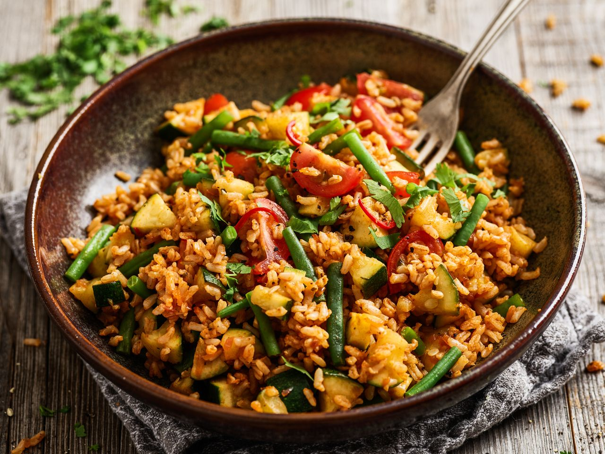

Reis-Gericht

Zutaten:
| Reis | 350 g |
| Tomaten | 150 g |
| Paprika | 2 |
| Brechbohnen | 100 g |
| Zuchini | 100 g |
| Zwiebel | 1 |
| Salz, Pfeffer | 1 Prise |
| Curry | 1 TL |
Zubereitung:
1.Schritt: Reis in Wasser kochen mit etwas Salz
2.Schritt: Paprika,Tomaten, Zuchini und Zwiebel klein schneiden
3.Schritt: Klein Geschnittenes in einer Pfanne mit Salz, Pfeffer und Curry mit Öl anbraten
4.Schritt: Reis dazu geben und unterrühren
5.Schritt: Mit etwas Petersillie verzieren und servieren